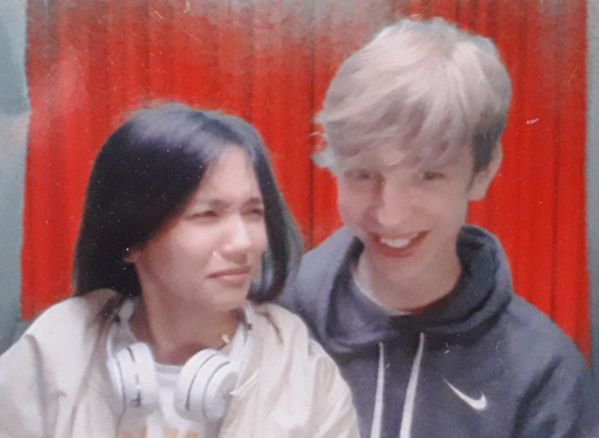
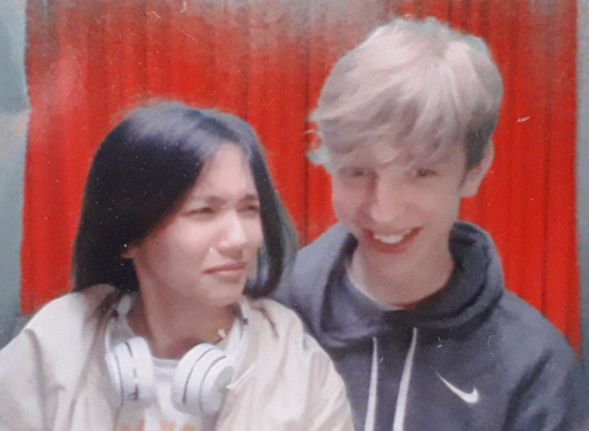
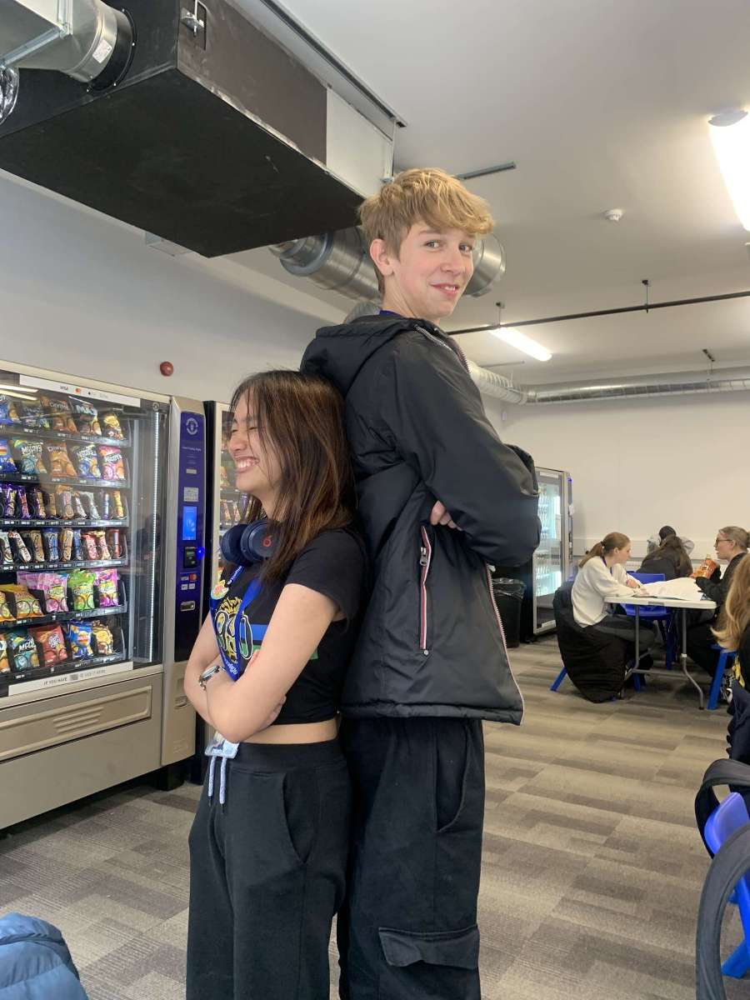
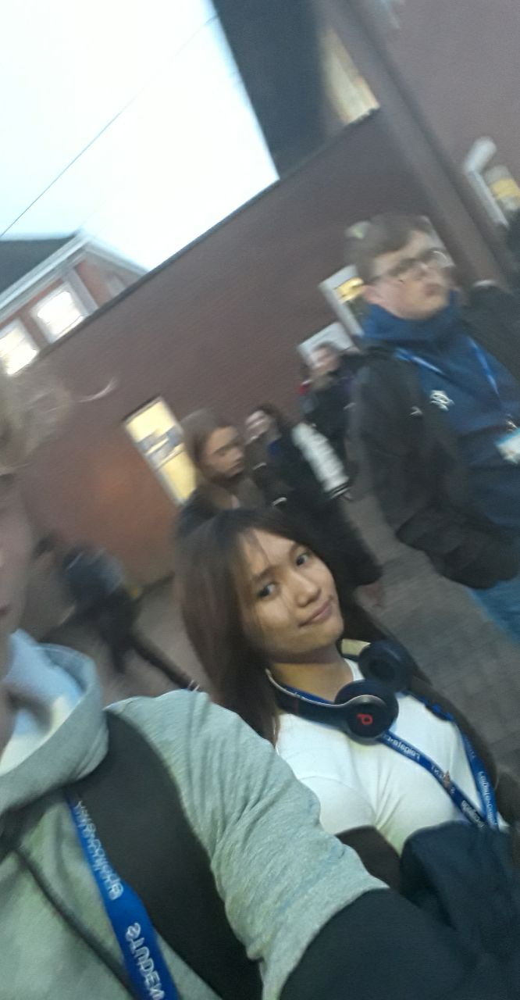
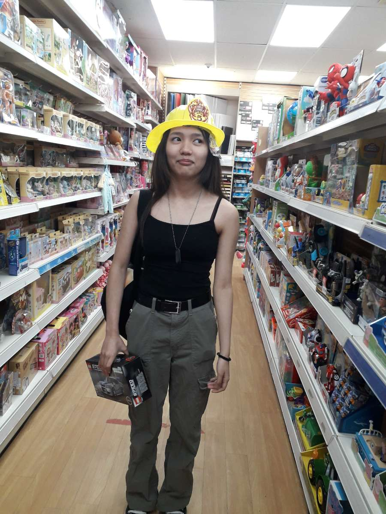
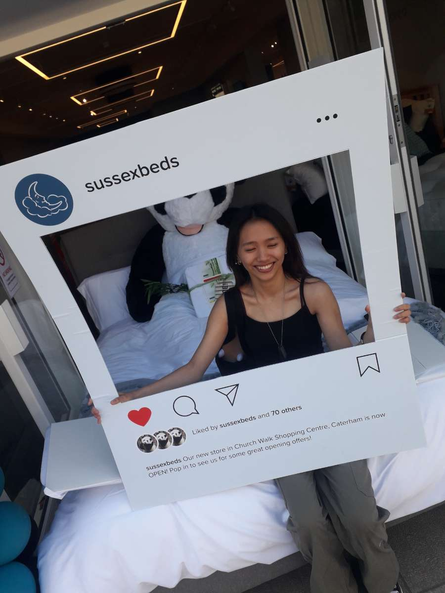
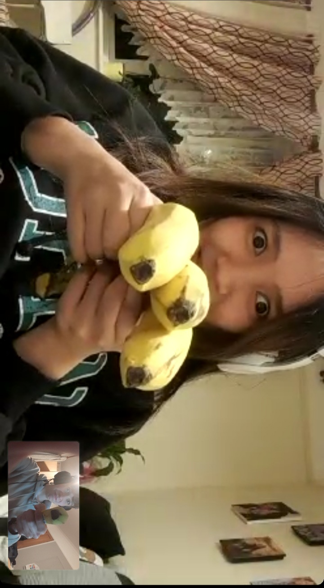
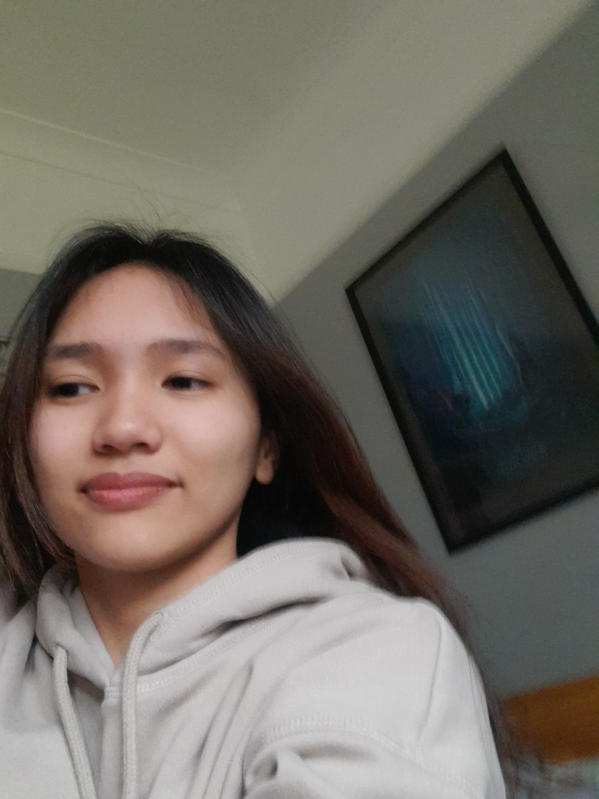

Hey Allysa, its me your boyfriend of almost 2 months when you are reading this Adam.
I know birthdays for you have never been incredible but i hope this can be a little something to make this one special xx
for your birthday i wanna give you a present that you made yourself, i wanna take you through the memory of what you have let
me experience since september 2022 on comunity day at reigate college
*PS you chose the colours on face time and im colour blind so please dont judge*
 

hehehe funny pictures
strangers:

believe it or not (i dont) not so long ago i hardly knew you. But i first started to know you on community day is P007
when i spoke to you with kenzo and andre in the corner of the class where you now sit in computing. I was already in the crumbles of a relationship
that just wasnt right and it is safe to say you caught my eye. I first noticed your skin, it stands out thats just a known fact and we spoke about the
questions we were given by jane and i found out you surfed (fromt the moment I found that out it was basically confirmed that at some point i was gonna
go to surf with you and even now im gonna keep working toward that). you were in your classic outfit; black top, dog tags and the navy blue cargos with the
2 D rings on each pocket with the cloth running through it. and then we were told to move and i didnt even move away from you because i didnt know anyone
and you made me feel comfortable i guess from there i gave kenzo my number and he gave it to you and i got ur snap from there.
we texted a little bit but not much and i was still awkward af because of not knowing you well and being unsure of what i wanted reigate to be like for me but
so far you have helped make it something special and from community day forward i looked forward to
after not too long we started to get to know eachother a bit better and i stared texting you more and
more, as time went by i eventually took this picture as were walking after computing and i remeber
feeling mad abt it cos i didnt take a good picture and i did wanna weird u out and ask for a better one.
(RIP the headphones). you were always a bit mysterious to me and it was clear that you were holding back
alot of yourself which i guess makes sense as i was still sorta new to you. I still remeber playing
apex with you and being nervous af because im shit at apex and i was excited to speak to you. then
kenzo joined aswell which was just eh but stil worth is as it was talking to you which meant i was able to
work on my awkwardness (i am sorry i was so bad)
I hope you are able to find some joy this birthday and i hope i can be involved because seeing you happy
keeps me sane. im not ashamed to admit that you alnone have got me through majority of the shit i have
been through at reigate without even knowing. there have been times when i have just felt shit and i
managed to deal with that by seeing your notification come up on my phone. so thankyou and just know
your effrots havent gone unnoticed and it means alot to me seeing you trying.

hey this girl is kinda cool:

after not too long i started to know you better an soon enough you were one of the highest on my bestfriends
list and one of the persons i wanted to know most about you were still a mystery but it was starting to unravel bit by bit and that idea of meeting we had over
christmas holidays didnt seem so bad. soon enough (not soon enough for me) you came to caterham. i didnt have much of a plan but i
remember being nervous and wanting to ask about what we are and if it was a date. i remeber asking you outside the church when we stopped for a second.
i asked would you consider this a date and you said idk just call it what you want which didnt fill me with confidence. I did consider asking if you wanted to
come to my house but i didnt want to seem to forward or make you too uncomfortable. I remember buying you that soft toy after we just stayed in the works for ages
and i wanted it to be smth special you could have to remember the day by because from the first hour of that day i knw i wanted it way more. I wanted to kiss you so badly when we were looking at the view in the graveyard and feeling
like an excieted child when i picked you up and i still feel like that every time xx. having you wrapped around me and holding on and breathing in my ear is one of the gratest things in existence and im still holing on for the day that you run and jump at me and wrap around me when you first see me. i remember taking the picture of you with that photoboard thing and i just loved the picture because you were smiling and
it was one of the first pics i had taken of you.ill put it bellow this box cos it a cool pic (shout out that giant panda bear thing)
form became something to look forward to for me even if it was a pointless half an hour when we just sat their i liked being able to see you and talk to you
(it was worth sitting next to kenzo for that time to be able to see you) i still remeber the day that you swapped seats with him and i was gassed because
i could be closer to you, that sounds weird af but like yk what i mean. and i felt bad for kenzo but all i cared abt was the chance to spend more time with you.


